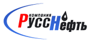
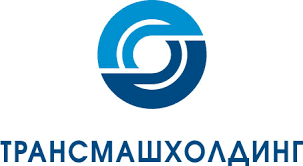

Ростовская группа предприятий "Кондитерские изделия Морозова":
выполнено внедрение ERP-системы и проведена автоматизация на 1С.
Разработаны механизмы трансформации и консолидации данных в управляющей компании, решения по автоматизации учета автотранспорта, система учета и
планирования ремонтов оборудования, система корпоративного документооборота, внедрена репликация данных, создан корпоративный портал для проведения
сверки внутригрупповых расчетов, выгрузки данных оборотного капитала, сбора остатков по банковским счетам. Участие в разработке корпоративных учетных
принципов и единого плана счетов совместно с Ernst & Young (Российское представительство), обучение пользователей работе с новой ERP-системой и
дополнительными модулями путем организации лекционных занятий и подготовки практических заданий для самостоятельного выполнения пользователями.
Группа компаний «Интегра»:
выполнено внедрение ERP-системы и проведена автоматизация на 1С.Внедрен модуль подготовки отчетности по МСФО,
интеграции, трансформации и консолидации данных в управляющей компании, решения по автоматизации учета автотранспорта, внедрена репликация данных,
созданы корпоративные сайты для проведения сверки внутригрупповых расчетов, выгрузки данных оборотного капитала, сбора остатков по банковским счетам.
Участие в разработке корпоративных учетных принципов и единого плана счетов совместно с Ernst & Young (Российское представительство),
обучение пользователей работе с новой ERP-системой и дополнительными модулями путем организации лекционных занятий и подготовки практических заданий
для самостоятельного выполнения пользователями.

Предприятия ОАО НК «РуссНефть»:
выполнено внедрение ERP-системы и проведена автоматизация на 1С, внедрены подсистемы бухгалтерского,
налогового учета, решения по автоматизации подсистемы кадров, финансового планирования.
Государственная корпорация по атомной энергии "Росатом":
выполнено внедрение ERP-системы и проведена автоматизация на 1С, автоматизированы подсистемы бухгалтерского, налогового, управленческого учета.
Участие в разработке корпоративных учетных принципов. Проведено внедрение модуль подготовки отчетности по МСФО, интеграции, трансформации и консолидации
данных в управляющей компании
Предприятия группы ТНК-BP:
силами наших программистов 1С была проведена доработка системы бухгалтерского учета и калькулирования
себестоимости, созданы механизмы отчетности по корпоративным стандартам.

Предприятия группы ЗАО «Трансмашхолдинг»:
выполнено внедрение ERP-системы и проведена автоматизация на 1С, внедрен модуль подготовки
отчетности по МСФО, интеграции, трансформации и консолидации данных в управляющей компании, решения по автоматизации учета автотранспорта, внедрена
репликация данных, созданы корпоративные сайты для проведения сверки внутригрупповых расчетов, выгрузки данных оборотного капитала, сбора остатков по
банковским счетам. Участие в разработке корпоративных учетных принципов и единого плана счетов совместно с Ernst & Young (Российское представительство),
обучение пользователей работе с новой ERP-системой и дополнительными модулями путем организации лекционных занятий и подготовки практических заданий
для самостоятельного выполнения пользователями.